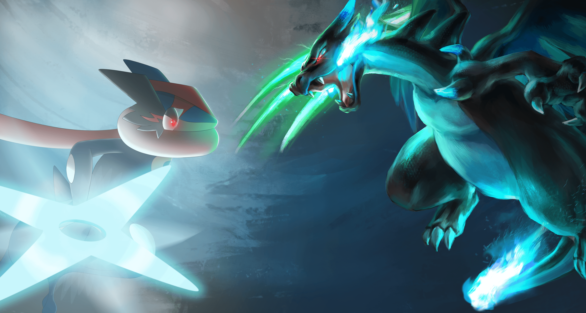

Pokémon es una franquicia creada por Satoshi Tajiri y desarrollada por Game Freak y Nintendo.
Su concepto gira en torno a criaturas llamadas Pokémon, que las personas (entrenadores Pokémon) capturan, entrenan y usan en combates amistosos.
Regiones principales
Cada generación de juegos introduce una nueva región inspirada en lugares reales. Algunas de las más conocidas son:
Kanto – Basada en la región japonesa del mismo nombre, primera región de la saga.
Johto – Inspirada en Kansai, muy ligada a la tradición y mitología.
Hoenn – Con clima variado, conocida por su énfasis en la naturaleza.
Sinnoh – De clima frío y con fuerte trasfondo mitológico.
Unova – Basada en Nueva York, primera región inspirada fuera de Japón.
Kalos – Basada en Francia, centrada en el estilo y la belleza.
Alola – Inspirada en Hawái, con clima tropical y formas regionales.
Galar – Basada en Reino Unido, con un sistema de gimnasios renovado.
Paldea – Basada en España y Portugal, de mundo abierto.

Curiosidades del universo Pokémon
El diseño de Pikachu originalmente era más alargado y delgado; su forma actual se hizo para hacerlo más adorable.
Arceus es considerado el “Pokémon creador”, responsable de dar forma al universo según la mitología de Sinnoh.
En los primeros juegos, los ataques se clasificaban por tipo (Fuego, Agua…), no por contacto físico o distancia.
La región de Kanto comparte nombres de ciudades con lugares reales de Japón.
Ditto y Mew comparten estadísticas casi idénticas, lo que ha inspirado teorías de fans durante años.
Objetivo de los entrenadores Pokémon
En la mayoría de juegos, la meta principal es:
Conseguir las 8 medallas de gimnasio.
Detener a un equipo villano (como Team Rocket o Magma/Aqua).